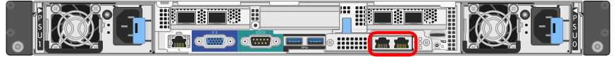
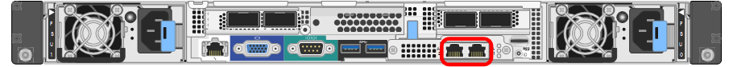
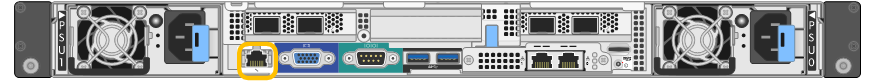
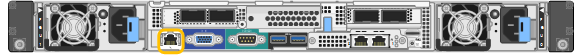
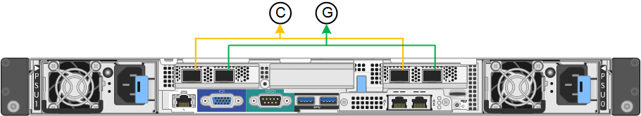
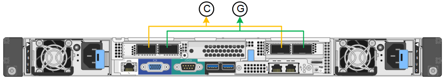
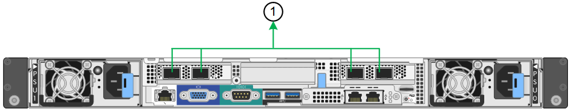
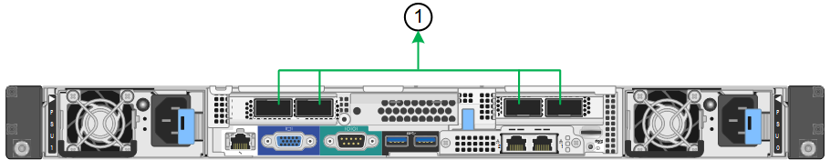
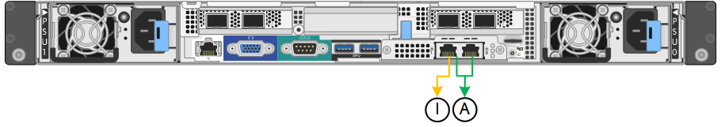
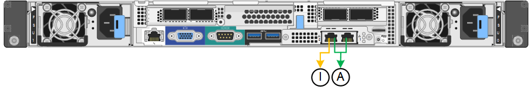

Inizia subito
Inizia subito
Raccogliere informazioni sulla rete (SG100 e SG1000)
 Suggerisci modifiche
Suggerisci modifiche
Utilizzando le tabelle, registrare le informazioni richieste per ciascuna rete collegata all'appliance. Questi valori sono necessari per installare e configurare l'hardware.

|
Invece di utilizzare le tabelle, utilizzare la guida fornita con ConfigBuilder. L'utilizzo della guida ConfigBuilder consente di caricare le informazioni di sistema e generare un file JSON per completare automaticamente alcuni passaggi di configurazione nel programma di installazione dell'appliance StorageGRID. Vedere "Automazione dell'installazione e della configurazione delle appliance". |
Controllare la versione di StorageGRID
Prima di installare un'appliance di servizi SG100 o SG1000, verificare che il sistema StorageGRID utilizzi una versione richiesta del software StorageGRID.
| Appliance | Versione StorageGRID richiesta |
|---|---|
SG1000 |
11,3 o versione successiva (si consiglia l'aggiornamento rapido più recente) |
SG100 |
11.4 o versione successiva (si consiglia l'ultima correzione rapida) |
Porte di amministrazione e manutenzione
La rete amministrativa per StorageGRID è una rete opzionale utilizzata per l'amministrazione e la manutenzione del sistema. L'appliance si connette alla rete di amministrazione utilizzando le seguenti porte di gestione 1-GbE sull'appliance.
Porte RJ-45 SG100:

SG1000 porte RJ-45:

| Informazioni necessarie | Il tuo valore |
|---|---|
Admin Network attivato |
Scegliere una delle seguenti opzioni:
|
Network bond mode (modalità bond di |
Scegliere una delle seguenti opzioni:
|
Porta dello switch per la porta sinistra cerchiata nel diagramma (porta attiva predefinita per la modalità Independent network bond) |
|
Porta dello switch per la porta destra cerchiata nel diagramma (solo modalità bond di rete Active-Backup) |
|
Indirizzo MAC per la porta Admin Network Nota: l'etichetta dell'indirizzo MAC sulla parte anteriore dell'appliance elenca l'indirizzo MAC della porta di gestione BMC. Per determinare l'indirizzo MAC della porta Admin Network, aggiungere 2 al numero esadecimale sull'etichetta. Ad esempio, se l'indirizzo MAC sull'etichetta termina con 09, l'indirizzo MAC della porta di amministrazione terminerà con 0B. Se l'indirizzo MAC sull'etichetta termina in (y)FF, l'indirizzo MAC per la porta di amministrazione terminerà in (y+1)01. È possibile eseguire facilmente questo calcolo aprendo Calculator in Windows, impostandolo sulla modalità Programmer, selezionando Hex, digitando l'indirizzo MAC e digitando + 2 =. |
|
Indirizzo IP assegnato da DHCP per la porta Admin Network, se disponibile dopo l'accensione Nota: è possibile determinare l'indirizzo IP assegnato da DHCP utilizzando l'indirizzo MAC per cercare l'indirizzo IP assegnato. |
|
Indirizzo IP statico che si intende utilizzare per il nodo appliance nella rete di amministrazione Nota: se la rete non dispone di un gateway, specificare lo stesso indirizzo IPv4 statico per il gateway. |
|
Subnet di rete amministrativa (CIDR) |
Porte di rete
Le quattro porte di rete dell'appliance si collegano alla rete StorageGRID Grid e alla rete client opzionale.
| Informazioni necessarie | Il tuo valore |
|---|---|
Velocità di collegamento |
Per SG100, scegliere una delle seguenti opzioni:
Per SG1000, scegliere una delle seguenti opzioni:
Nota: per SG1000, le velocità a 10 e 25 GbE richiedono l'utilizzo di adattatori QSA. |
Modalità Port Bond |
Scegliere una delle seguenti opzioni:
|
Porta dello switch per la porta 1 (rete client per la modalità fissa) |
|
Porta dello switch per la porta 2 (rete di rete per la modalità fissa) |
|
Porta dello switch per la porta 3 (rete client per la modalità fissa) |
|
Porta dello switch per la porta 4 (Grid Network per la modalità fissa) |
Porte Grid Network
La rete grid per StorageGRID è una rete richiesta, utilizzata per tutto il traffico StorageGRID interno. L'appliance si collega alla rete Grid tramite le quattro porte di rete.
| Informazioni necessarie | Il tuo valore |
|---|---|
Network bond mode (modalità bond di |
Scegliere una delle seguenti opzioni:
|
Tagging VLAN attivato |
Scegliere una delle seguenti opzioni:
|
Tag VLAN (se è attivata la codifica VLAN) |
Immettere un valore compreso tra 0 e 4095: |
Indirizzo IP assegnato da DHCP per Grid Network, se disponibile dopo l'accensione |
|
Indirizzo IP statico che si intende utilizzare per il nodo appliance sulla rete Grid Nota: se la rete non dispone di un gateway, specificare lo stesso indirizzo IPv4 statico per il gateway. |
|
Subnet Grid Network (CIDR) |
|
Impostazione MTU (Maximum Transmission Unit) (opzionale)è possibile utilizzare il valore predefinito 1500 o impostare MTU su un valore adatto per i frame jumbo, ad esempio 9000. |
Porte di rete client
La rete client per StorageGRID è una rete opzionale, generalmente utilizzata per fornire l'accesso del protocollo client alla griglia. L'appliance si connette alla rete client utilizzando le quattro porte di rete.
| Informazioni necessarie | Il tuo valore |
|---|---|
Rete client abilitata |
Scegliere una delle seguenti opzioni:
|
Network bond mode (modalità bond di |
Scegliere una delle seguenti opzioni:
|
Tagging VLAN attivato |
Scegliere una delle seguenti opzioni:
|
Tag VLAN (se è attivata la codifica VLAN) |
Immettere un valore compreso tra 0 e 4095: |
Indirizzo IP assegnato da DHCP per la rete client, se disponibile dopo l'accensione |
|
Indirizzo IP statico che si intende utilizzare per il nodo appliance sulla rete client Nota: se la rete client è attivata, il percorso predefinito dell'appliance utilizzerà il gateway specificato. |
|
Porte di rete per la gestione BMC
È possibile accedere all'interfaccia BMC dell'appliance di servizi utilizzando la porta di gestione 1-GbE cerchiata nel diagramma. Questa porta supporta la gestione remota dell'hardware del controller su Ethernet utilizzando lo standard IPMI (Intelligent Platform Management Interface).

|
È possibile attivare o disattivare l'accesso IPMI remoto per tutti i dispositivi che contengono un BMC. L'interfaccia IPMI remota consente l'accesso hardware di basso livello alle apparecchiature StorageGRID da parte di chiunque disponga di un account BMC e di una password. Se non è necessario l'accesso IPMI remoto al BMC, disattivare questa opzione utilizzando uno dei seguenti metodi: In Grid Manager, andare a CONFIGURAZIONE > sicurezza > Impostazioni di protezione > dispositivi e deselezionare la casella di controllo Abilita accesso IPMI remoto. Nell'API di gestione griglia, utilizzare l'endpoint privato: PUT /private/bmc.
|
Porta di gestione BMC SG100:

SG1000 porta di gestione BMC:

| Informazioni necessarie | Il tuo valore |
|---|---|
Porta dello switch Ethernet da collegare alla porta di gestione BMC (cerchiata nel diagramma) |
|
Indirizzo IP assegnato da DHCP per la rete di gestione BMC, se disponibile dopo l'accensione |
|
Indirizzo IP statico che si intende utilizzare per la porta di gestione BMC |
|
Modalità Port bond
Quando si configurano i collegamenti di rete per le appliance SG100 e SG1000, è possibile utilizzare il bonding delle porte per la connessione alla rete Grid e alla rete client opzionale e le porte di gestione 1-GbE per la connessione alla rete amministrativa opzionale. Il port bonding consente di proteggere i dati fornendo percorsi ridondanti tra le reti StorageGRID e l'appliance.
Network Bond
Le porte di rete sul dispositivo di servizi supportano la modalità Fixed Port Bond o aggregate Port Bond per le connessioni di rete Grid Network e Client Network.
Modalità fissa port bond
Fixed port bond mode è la configurazione predefinita per le porte di rete. Le figure mostrano il modo in cui le porte di rete su SG1000 o SG100 sono collegate in modalità Fixed Port Bond.
SG100:

SG1000:

| Didascalia | Quali porte sono collegate |
|---|---|
C. |
Le porte 1 e 3 sono collegate tra loro per la rete client, se viene utilizzata questa rete. |
G |
Le porte 2 e 4 sono collegate tra loro per la rete Grid. |
Quando si utilizza la modalità Fixed Port Bond, è possibile collegare le porte utilizzando la modalità Active-backup o la modalità link Aggregation Control Protocol (LACP 802.3ad).
-
In modalità Active-backup (impostazione predefinita), è attiva una sola porta alla volta. In caso di guasto della porta attiva, la relativa porta di backup fornisce automaticamente una connessione di failover. La porta 4 fornisce un percorso di backup per la porta 2 (rete griglia), mentre la porta 3 fornisce un percorso di backup per la porta 1 (rete client).
-
In modalità LACP, ciascuna coppia di porte forma un canale logico tra l'appliance di servizi e la rete, consentendo un throughput più elevato. In caso di guasto di una porta, l'altra porta continua a fornire il canale. Il throughput viene ridotto, ma la connettività non viene influenzata.
|
|
Se non sono necessarie connessioni ridondanti, è possibile utilizzare una sola porta per ciascuna rete. Tuttavia, tenere presente che l'avviso collegamento dell'appliance dei servizi potrebbe essere attivato in Gestione griglia dopo l'installazione di StorageGRID, a indicare che un cavo è scollegato. È possibile disattivare questa regola di avviso in modo sicuro. |
Modalità aggregate port bond
La modalità aggregate port bond aumenta significativamente il throughput per ciascuna rete StorageGRID e fornisce percorsi di failover aggiuntivi. Queste figure mostrano come le porte di rete sono collegate in modalità aggregate port bond.
SG100:

SG1000:

| Didascalia | Quali porte sono collegate |
|---|---|
1 |
Tutte le porte connesse sono raggruppate in un unico collegamento LACP, consentendo l'utilizzo di tutte le porte per il traffico di rete Grid Network e Client Network. |
Se si intende utilizzare la modalità aggregate port bond:
-
È necessario utilizzare la modalità di collegamento di rete LACP.
-
È necessario specificare un tag VLAN univoco per ciascuna rete. Questo tag VLAN verrà aggiunto a ciascun pacchetto di rete per garantire che il traffico di rete venga instradato alla rete corretta.
-
Le porte devono essere collegate a switch in grado di supportare VLAN e LACP. Se nel bond LACP partecipano più switch, questi devono supportare gruppi MLAG (Multi-chassis link Aggregation groups) o equivalenti.
-
Si comprende come configurare gli switch per l'utilizzo di VLAN, LACP e MLAG o equivalente.
Se non si desidera utilizzare tutte e quattro le porte, è possibile utilizzare una, due o tre porte. L'utilizzo di più porte aumenta al massimo la possibilità che una parte della connettività di rete rimanga disponibile in caso di guasto di una delle porte.
|
|
Se si sceglie di utilizzare meno di quattro porte di rete, è possibile che venga attivato un avviso Services appliance link down in Grid Manager dopo l'installazione del nodo appliance, che indica che un cavo è scollegato. È possibile disattivare questa regola di avviso per l'avviso attivato. |
Network bond mode per le porte di gestione
Per le due porte di gestione 1-GbE sull'appliance di servizi, è possibile scegliere la modalità Independent network bond o la modalità Active-Backup network bond per connettersi alla rete amministrativa opzionale. Queste figure mostrano come le porte di gestione delle appliance sono collegate in modalità Network Bond per la rete di amministrazione.
SG100:

SG1000:

| Didascalia | Network bond mode (modalità bond di |
|---|---|
R |
Modalità Active-Backup. Entrambe le porte di gestione sono collegate a una porta di gestione logica collegata alla rete di amministrazione. |
IO |
Modalità indipendente. La porta a sinistra è collegata alla rete di amministrazione. La porta a destra è disponibile per le connessioni locali temporanee (indirizzo IP 169.254.0.1). |
In modalità indipendente, solo la porta di gestione a sinistra è connessa alla rete di amministrazione. Questa modalità non fornisce un percorso ridondante. La porta di gestione a destra è disconnessa e disponibile per le connessioni locali temporanee (utilizza l'indirizzo IP 169.254.0.1)
In modalità Active-Backup, entrambe le porte di gestione sono collegate alla rete di amministrazione. È attiva una sola porta alla volta. In caso di guasto della porta attiva, la relativa porta di backup fornisce automaticamente una connessione di failover. L'Unione di queste due porte fisiche in una porta di gestione logica fornisce un percorso ridondante alla rete di amministrazione.
|
|
Se è necessario effettuare una connessione locale temporanea all'appliance di servizi quando le porte di gestione 1-GbE sono configurate per la modalità Active-Backup, rimuovere i cavi da entrambe le porte di gestione, collegare il cavo temporaneo alla porta di gestione a destra e accedere all'appliance utilizzando l'indirizzo IP 169.254.0.1. |